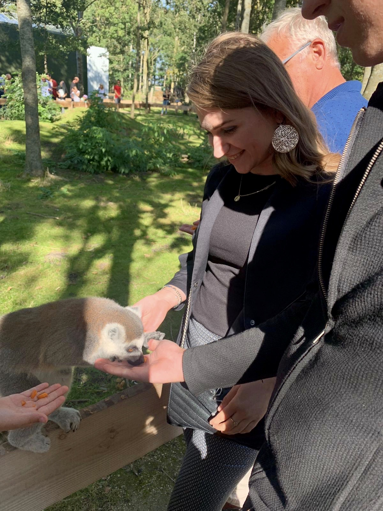

Als tweedejaars CMD student aan de Hogeschool van Amsterdam ben ik op zoek naar een leerzame stage gedurende de periode van 14 april tot 26 juni 2020.
Wie ben ik
Hee! ik ben Kelsey. Ik ben negentien jaar oud en ik woon in Volendam. Momenteel studeer Communication and Multimedia Design (CMD) aan de HvA, dit doe ik met veel plezier. Ik vind het leuk om aan creatieve en uitdagende opdrachten te werken. In mijn vrijetijd ben ik te vinden in bakkerij van Pooij, als verkoopmedewerkster. Daarnaast hou ik van reizen, dierentuinen bezoeken, series kijken, foto's maken en bewerken en uitgaan met mijn vriendinnen.
Mijn opdrachten

Waar wil ik mezelf in ontwikkelen?
Wat is mijn doelstelling?
Users
Hoe denken mensen? Je gebruiker begrijpen en aan de hand hiervan concepten ontwikkelen en uitwerken vind ik super interessant. Wat ik vooral interessant vind is het gebied van beinvloeding van gebruikers, in hoeverre dit etisch verantwoord is. Ik ben nu tweede jaars student CMD en ik merk dat ik nu al heel veel kennis heb opgedaan, maar er zijn nog zoveel aspecten die wij op dit gebied nog niet hebben behandeld. Ik wil mij hierin meer gaan verdiepen.
Design
Welke keuzes moet ik maken tijdens het ontwerpen? Ik heb ervaren dat je hier heel veel van leert door te doen en feedback te krijgen van iemand. Volgens mij is er geen antwoord op de vraag: wat is een goed ontwerp? Maar ik hoop mij hier in te kunnen ontwikkelen.
Technisch
De laatste tijd ben ik mij steeds meer gaan verdiepen in de technische kant van het vak. Hiermee bedoel ik HTML, CSS en JavaScript. Ik merk dat ik hier in groei en dat ik het leuk begin te vinden. Ik vind het leuk om te experimenteren.